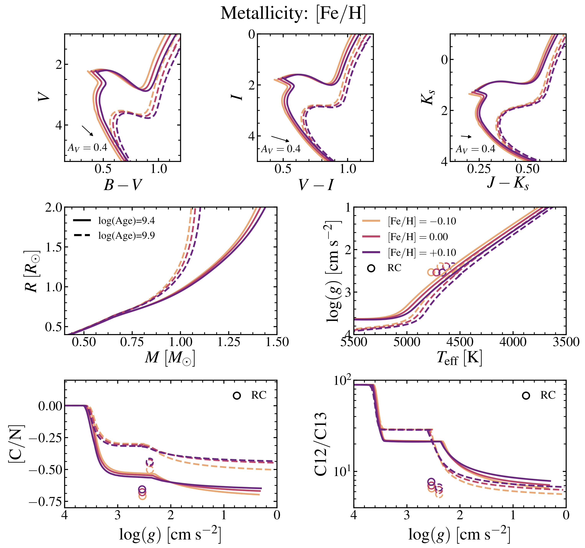
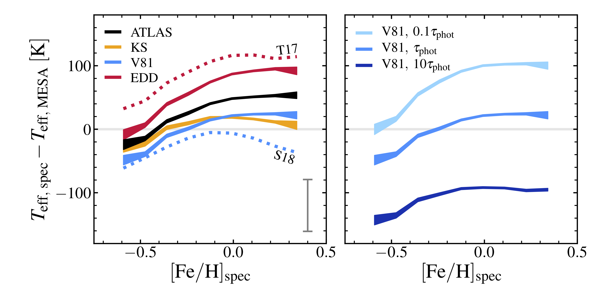

MESA Isochrones and Stellar Tracks: Next Generation Stellar Models

I led the effort on the MIST project, for which my collaborators and I used MESA, an open-source stellar evolution software, to run computer simulations of how different types of stars evolve with time. We constructed an extensive grid of stellar interior structure & evolution models over a wide range of masses, composition, and ages and performed extensive testing and comparisons against a rich array of existing observations to ensure high-quality. Since our team has made these models publicly available, they have been used in numerous applications, including stellar, extragalactic, and exoplanet studies. These models are already making a significant impact in the field: in just over two years since publication, the paper has already received 225 citations. The movie to the right shows the time evolution of a 2 solar mass star from the pre-main sequence phase to the white dwarf cooling phase in the so-called Hertzprung-Russell diagram, where the x and y axes show temperature (increasing to the left, where blue/red represents hot/cold) and brightness (increasing to the top). This movie shows the star's life trajectory and illustrates how the properties of this star change with time. The size of the circle approximately scales with the relative size of the star at each stage of its evolution. Read more about it here.
"How Old?": Measuring the Ages of Stars in the Gaia Era
The age, along with mass, chemical composition, temperature, and brightness, is one of the fundamental parameters that describe the properties of a star. The importance of accurate and reliable measurements of the stellar age reaches far beyond the study of stars itself: it informs formation models of extrasolar planets orbiting stars other than our Sun and it sheds light on the assembly history of our Milky Way galaxy. However, measuring the age of a star is a surprisingly difficult task. We must appeal to indirect methods—comparing against computer models of stellar evolution—to obtain our best estimates of the stellar age. This process is further complicated by the fact that there are still many uncertainties and assumptions entering into stellar models, including the simplified representation of large-scale mixing (convection) in the stellar interior. I used the MIST models to evaluate the various methods of determing ages in stars, including the use of the color-magnitude diagram ("the observer's Hertzsprung-Russell diagram"). The figure on the right shows the sensitivity of observations to the age (what we want) in the presence of uncertainties in stellar composition. I found several combinations of observations that can be leveraged to infer stellar ages even in the presence of many modeling uncertainties. I was also able to project how well we expect to measure the color (temperature) and magnitude (brightness) of stars—important age diagnostics—using observations of unprecented quality from the still-ongoing Gaia mission. Read more about it here.
"How Warm?": Determining the Temperatures of Red Giant Stars
The measurement of the stellar surface temperature is also an extremely challenging task. One complication is that different methods yield substantially discrepant answers such that it is difficult to know what is the true temperature of a given star. This is a significant problem since we rely on the accuracy of observations to calibrate and improve the quality of stellar interior models. One of the essential inputs to stellar models, which at its core is the solution to the coupled differential equations of stellar structure, is what is called the "surface boundary condition." The surface boundary condition (SBC) dictates the temperature and pressure at the base of the stellar atmosphere, and there is a wide range of options to choose from, ranging from simple formulae to tabulated results from complex atmosphere calculations. I used the MIST models to test the impact of SBC on the temperatures of a particular subset of stars called the red giants (our Sun's future in about 5 billion years). I found that one's choice of the SBC in an otherwise identical stellar model calculation can lead to a +/- 100 K difference on the resulting temperature. The figure on the right shows the comparison between our model temperatures and the data from real stars, where the left panel shows several flavors of SBC and the right panel shows different implementations of the same SBC. I presented arguments for the use of a specific type of SBC, and how SBCs in general should be implemented in stellar model calculations. Read more about it here.